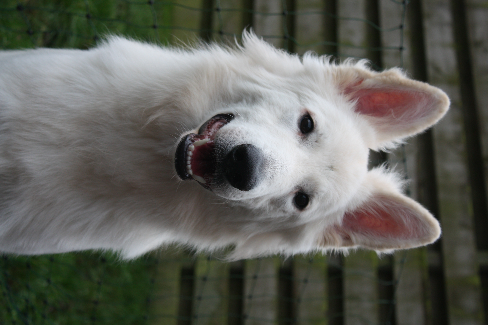

Scout
Welkom op de website van Scout. Hij is geboren op 31-12-2020 en is van ons D-nest. Scout is een bijzondere hond omdat hij een afwijking heeft genaamd megaoesophagus. Ondertussen groeid hij aardig door en krijgt hij nog steeds meerdere keren per dag eten. Hier op de website kunt u informatie vinden over hoe wij omgaan met Scout en zijn aandoening.
Mocht u nog vragen hebben wees dan niet bang om contact op te nemen met ons! Voor meer informatie over de onze kennel wil ik u doorverwijzen naar onze website www.casmolan.nl